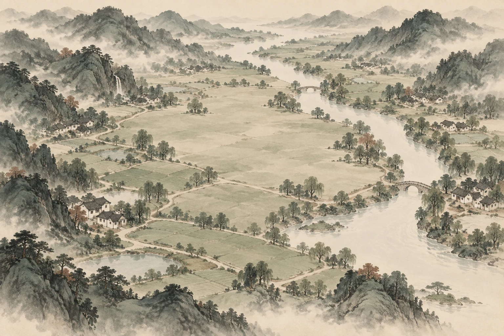
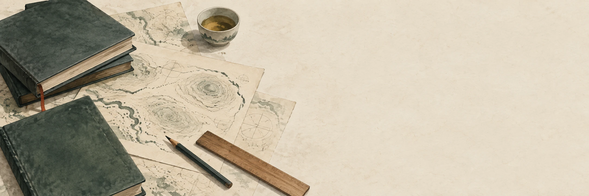

一 · 求知1936 — 1939
远行，是为了看得更深。
赴英求学、回国任教、持续译介地理著作，李旭旦在中外学术之间搭起桥梁。打开视野，也意味着带着问题重新理解自己的土地。
带走一个问题 我们如何向世界学习？
一次观看，也是一种提问
一条河，为什么吸引人们定居？
一条路，怎样改变一个村庄？
一间课堂，又能把目光带向多远？
地理学的目光，可以越过山川的轮廓，走进生活的细部。李旭旦的学术与教育经历，启发我们把自然环境和人的活动放在一起理解。
这卷展览邀请你做一次观察者：沿足迹读人生，叠图层看联系，在一个小小的选址问题中体会求实，最后把自己的发现留在纸上。
从一个人，读懂一种精神第一卷 / 其人
从江苏江阴出发，将世界的学问带回中国，
再把理解土地的方法，交给后来者。
赴英求学、回国任教、持续译介地理著作，李旭旦在中外学术之间搭起桥梁。打开视野，也意味着带着问题重新理解自己的土地。
带走一个问题 我们如何向世界学习？
在《中国地理区之划分》中，他尝试把自然条件与人类生活共同纳入分区的考量。一个地方的面貌，无法只凭一种因素解释。
带走一个问题 我们的判断依据是什么？
在南京师范学院，李旭旦参与地理学科的创建与发展，并承担系主任等工作。研究也在教学中延续，成为新一代学人的起点。
带走一个问题 我们又能把什么传下去？
生平与学术背景见资料 01。章节标题、提问和抒情文字为创作表达，非李旭旦原话。
第三卷 / 观地
先看山川，再看聚落，最后看往来。
每添一层，理解便多一个维度。

AI 山水意象 · 图层为概念示意
本互动解释人地关系的基本视角，不对应真实地点，也不复原李旭旦的某项具体研究。学术背景见资料 01。
第四卷 / 问地
一次虚构的田野思考。
换一种条件，看看判断会怎样改变。
观察记录 / 不设唯一答案
教学情境及地点均为虚构，定性比较不构成真实选址建议。实际决策还需现场调查、测量、居民意见与专业评估。这是对求实方法的创作转译，非李旭旦开展过的具体项目。

第五卷 / 书斋
译介、编著、教学。
让思想在不同的语言与代际之间流动。
点开书脊，读它所连接的学术世界。封面为概念设计。
理解他人的方法，仍要回到脚下的问题。创作阐释，非原文引语
第六卷 / 辨读
史实、创作表达、概念示意，
它们都能讲故事，却承担不同的作用。
试着辨认这三段内容。每次选择，都可以重新思考。
第七卷 / 留笺
展览会收卷，观察可以继续。
选一个字，写一句话，留下一张属于你的观展笺。
探索对应章节即可收集印记；无需集齐，也能保存观展笺。
文字只在当前页面生成，不会上传。请自行保存图片。
PNG 图片 · 1080 × 1440
点此保存已生成的 PNG ↓此刻的思考，也成为展览的一部分。
卷末 / 有据
每一次靠近历史，
都从尊重资料开始。
生平、论文与著作信息，据下列机构资料和书目整理。
章节标题、回望、寄语及视觉构成为创作，不充作人物原话。
山水、路线、学堂情境用于引导理解，不替代历史影像或实测数据。
作品呈现的是有限资料下的主题性叙事，非完整学术评传。阅读原始材料，能看见更丰富的历史语境。
卷有尽，求知无尽。
图上每一个点，
都值得走近一点。
创作者寄语
收卷，回到开篇 ↑